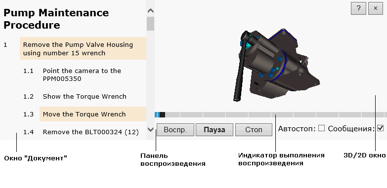

Интерфейс пользователя публикации процедуры состоит из двух рабочих областей: «Документ» и «3D-окно»/«2D-окно». Каждая рабочая область имеет свои элементы управления, описанные ниже. Обратите внимание, что внешний вид публикации, а также наличие тех или иных команд определяются спецификационным компонентом, который используется для публикации.
|  |
Окно «Документ» показывает документ, созданный в соответствии с выбранным стандартом. Документ содержит пошаговое описание иллюстрированной технической процедуры. Шаг процедуры может содержать интерактивные элементы, щелкая которые можно увидеть соответствующий момент процедуры в 3D-окне или соответствующую иллюстрацию в 2D-окне.
3D-окно показывает трехмерное представление технической процедуры, описание которой расположено в окне «Документ». Техническую процедуру можно просматривать, используя панель воспроизведения и команды навигации. Направляющие оси в правом верхнем углу 3D-окна позволяют определить положение и направление модели в трехмерном пространстве.
Если при первом открытии публикации, 3D-окно закрыто, щелкните соответствующий интерактивный элемент в окне «Документ», чтобы открыть 3D-окно.
Содержит кнопки для управления воспроизведением процедуры в 3D-окне.
| Команда | Назначение |
|---|---|
| Воспр. | Включает проигрывание процедуры, если до момента включения процедура была остановлена. |
| Пауза | Останавливает проигрывание на текущем моменте процедуры. |
| Стоп | Останавливает проигрывание и устанавливает процедуру к началу. |
| Предыдущий/Следующий шаг | Перемещает воспроизведение процедуры на один шаг назад/вперед. |
| Автостоп | Если выбрано, останавливает воспроизведение процедуры после каждого шага. |
| Сообщения | Если выбрано, разрешает показ предупреждающих сообщений во время проигрывания. |
| Зафиксировать вид | Если выбрано, текущий вид в 3D-окне фиксируется и перемещение камеры в пространстве блокируется во время проигрывания процедуры. |
| Скорость | Позволяет выбрать скорости проигрывания, а именно выбирается коэффициент, на который будет умножена стандартная скорость проигрывания. |
Отслеживает ход воспроизведения процедуры. Щелкните на индикаторе, чтобы выбрать требуемый момент процедуры.
| Операция | Действие пользователя |
|---|---|
| Масштабировать | Вращайте колесо мыши вперед или назад. |
| Переместить | Перемещайте мышь, удерживая колесо мыши. |
| Вращать | Перемещайте мышь, удерживая левую кнопку. |
| Установить центр вращения* |
Удерживая клавишу ALT, щелкните объект в 3D-окне.
*Если публикация использует плагины браузера, то центр вращения устанавливается в выбранную точку на модели. Если публикация не использует плагины браузера, то центр вращения устанавливается в центр габаритной рамки выбранного объекта. |
Для доступа к меню, щелкните правой кнопкой мыши в 3D-окне.
| Команда | Назначение | Свойства 3D-окна* |
Позволяет выбрать режим визуализации (рендеринга).
*Команда недоступна, если плагины браузера не используются. |
|---|---|
| О программе | Показывает номер версии публикации и программ просмотра 2D- и 3D-иллюстраций. |
2D-окно показывает векторные и растровые изображения, соответствующие технической процедуре в окне «Документ». По умолчанию, 2D-окно скрыто. 2D-окно открывается после щелчка на соответствующую гиперссылку в окне «Документ». Для доступа к контекстному меню, щелкните правой кнопкой мыши в 2D-окне. Набор контекстных команд зависит от программы просмотра, которая используется в 2D-окне.
| Операция | Действие пользователя |
|---|---|
| Переместить* | Перемещайте мышь, удерживая левую кнопку. |
| Масштабировать* | Вращайте колесо мыши вперед или назад. |
| *Команда недоступна, если плагины браузера не используются. | |
| Справка | Вызов текущей справки. | |
| Закрыть | Закрывает 3D-окно или 2D-окно. |